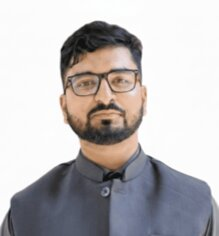

Sajjadur Rahman
MSc Researcher · Academic Editor · Freelance Consultant · Dhaka, Bangladesh

Contact & Links
Soil Scientist.
Academic Editor.
I am an MSc researcher in the Department of Soil, Water and Environment at the University of Dhaka, where I am investigating bentonite-biochar coated urea (BBCU) as a climate-smart slow-release fertilizer for improved nitrogen use efficiency in South Asian rice and vegetable systems. I hold a BSc from the same department with a CGPA of 3.60/4.00, and I am a recipient of the National Science and Technology Fellowship from Bangladesh's Ministry of Science and Technology.
Alongside my thesis work, I hold active research affiliations at the Bangladesh Council of Scientific and Industrial Research (BCSIR), where I study urban air quality and heavy metal contamination, and at the Dhaka University Nanotechnology Centre (DUNTC), where I completed a nano-fertilizer experiment on wheat. I also developed SPADE — an open-source Python/Streamlit platform for standardised nitrogen use efficiency statistical analysis.
As a freelance professional, I work with MSc and PhD students to improve their manuscript structure, language, and journal formatting; analyse research datasets; and guide thesis writing from proposal to final chapter. I bring both technical depth and genuine enthusiasm to every project I take on.
Education
— ❧ —Master of Science — Soil Science
University of DhakaThesis: Optimizing Nitrogen Efficiency Using Bentonite–Biochar–Coated Urea (BBCU) in Rice and Eggplant Systems. Designing CRD-based pot and field experiments with 8 treatments × 3 replications, quantifying four NUE indices, and developing field-scalable fertilizer management strategies.
Bachelor of Science — Soil, Water & Environment
University of DhakaComprehensive undergraduate training in soil physics, pedology, soil chemistry, hydrology, GIS & remote sensing, plant nutrition, agronomy, and climate change mitigation. Seminar paper on IoT in Agriculture 5.0.
Research Roles
— ❧ —- Designing CRD-based pot and field experiments (8 treatments × 3 replications) evaluating BBCU as a climate-smart slow-release fertilizer for South Asian rice–vegetable systems.
- Quantifying four NUE indices: Agronomic Efficiency (AE), Recovery Efficiency (RE), Physiological Efficiency (PE), and Nitrogen Harvest Index (NHI).
- Post-harvest soil analysis: residual NH₄⁺/NO₃⁻ via KCl extraction, Walkley-Black OC, pH, and EC.
- Awarded National Science and Technology Fellowship (Ministry of Science and Technology) for this research.
- Conducted a CRD pot experiment (8 treatments × 3 replications, 24 pots) comparing nano-urea versus conventional urea on wheat growth and soil health.
- After hail damage, redirected focus to plant tissue nutrient quality (Kjeldahl N, P/K/S/Ca/B via AAS and ICP-OES) and NUE indices.
- Developed SPADE — an open-source Python/Streamlit application for integrated NUE computation, factorial ANOVA with Tukey HSD, outlier detection, and publication-ready figure export. Manuscript in preparation.
- Ultrafine particulate matter (PM₀.₁) sampling in Dhaka's urban environment using Nanosampler II (Model 3182, Kanomax, Japan).
- Heavy-metal characterisation via AAS (Varian AA 240 FS) to assess atmospheric contamination and ecological risk indices.
- Assisting with study design for evaluating phytoremediation potential of indoor plant species under controlled conditions.
- Contributed to plant procurement, air quality monitoring, data collection, and ongoing analysis.
- Led a four-member team collecting and analysing 40+ soil, dust, and leaf samples from industrial zones surrounding Dhaka.
- Assessed spatial distribution, geo-accumulation index, enrichment factor, and ecological risk of heavy metals in peri-urban agro-ecosystems.
Affiliations
— ❧ —University of Dhaka
Dept. of Soil, Water & EnvironmentHome department for both BSc and MSc studies. MSc thesis on BBCU slow-release fertilizers. NST Fellowship awardee. Class Representative for MS Session 2023-24.
BCSIR
Bangladesh Council of Scientific & Industrial ResearchResearch Trainee in atmospheric science. Working on ultrafine particulate matter (PM₀.₁) characterisation and heavy metal analysis in Dhaka's urban environment.
DUNTC
Dhaka University Nanotechnology CentreResearch Fellowship for nano-fertilizer experiment on wheat. Developed SPADE software platform for NUE statistical analysis. Completion report submitted.
Awards & Fellowships
— ❧ —National Science and Technology Fellowship
Ministry of Science and Technology, Government of Bangladesh — awarded for MSc thesis research on BBCU slow-release fertilizers and nitrogen use efficiency.
Government Scholarship for BSc Academic Excellence
Government of Bangladesh — awarded for outstanding academic performance during undergraduate studies (CGPA 3.60/4.00).
Academic Admission — Wageningen University & Research
MSc Soil Science, The Netherlands (Student No. 1841033). Academic admission confirmed; self-funding not viable, deferral to 2027 being explored.
Research Fellowship — DUNTC
Dhaka University Nanotechnology Centre fellowship for nano-fertilizer research on wheat (BARI Gom 33).
Transforming Dhaka into an Eco-Friendly Megacity
Preliminary Round Winner — Ministry of Youth & Sports, Government of Bangladesh.
Project GreenZen — Top 10%
Seaweed-based biodegradable packaging proposal — placed in top 10% of 50 competing teams.
Gold Award — 2nd International Competition for Young Researchers
Top 10% recognition for research contribution on agricultural technology assessment in Bangladesh.
Conferences & Proceedings
— ❧ —Eight presentations at international and national conferences across four countries — Bangladesh, Thailand, Turkey, and Kazakhstan.
| Year | Conference | Location | Topic |
|---|---|---|---|
| 2025 | International Conference | 🇧🇩Bangladesh | Nano-fertilizers in wheat cultivation: a comprehensive review and strategic framework for sustainable productivity |
| 2024 | AIT International Conference | 🇹🇭Bangkok, Thailand | Economic viability and sustainability of hydroponics in flood-prone Bangladesh |
| 2024 | 3rd International Ege Congress on Scientific Research | 🇹🇷Turkey | IoT on the development of Agriculture 5.0: prospects and challenges (published proceedings) |
| 2024 | International Congress on Food, Agriculture & Environmental Research | 🌐International | Climate change and resilient farming approaches in Bangladesh |
| 2024 | HODJA AKHMET YASSAWI 8th International Congress | 🇰🇿Kazakhstan | Smart, sustainable agriculture initiative in Bangladesh: a data-driven approach to food security |
| 2024 | International Congress on Sustainable Agriculture | 🌐International | Organic fertilizer adoption and challenges among farmers in the Dhaka region |
| 2023 | IEEE SIGHT "Ideas for Life" Conference | 🇧🇩Dhaka | Improving crop productivity in Bangladesh through advanced yield prediction techniques |
| 2022 | 2nd International Competition for Young Researchers | 🌐International | Assessment and analysis of Bangladesh's agricultural approach based on technology |
Technical Skills
— ❧ —Laboratory Instrumentation
Data & Statistics
Spatial & Field Analysis
Scientific Communication
Languages
— ❧ —English
Proficient — IELTS 7.5Listening 8.0 · Reading 8.0 · Speaking 7.5 · Writing 6.5. Used daily for research writing, manuscript editing, and academic communication.
Bangla (বাংলা)
NativePrimary language for personal writing, blogging, and community engagement. Bengali blog at Blogger with 13,000+ readers across science, history, and culture.
Leadership Roles
— ❧ —President — Soil Club, University of Dhaka Chapter
Nov 2025 – PresentConceptualised and coordinated the 'Healthy Soils for Healthy Cities' World Soil Day 2025 campaign — 50,000+ outreach. Delivered a technical presentation on organic fertilizer adaptation for urban soil sustainability to an international audience.
Class Representative — MS Session 2023-24
University of Dhaka · Mar 2025 – PresentRepresenting 120+ students; coordinating between students, faculty, and administration; assisting professors with scheduling and departmental communications.
Magazine Editor — Byapon, Youth Science Magazine
Jan 2022 – Dec 2024Edited and authored science content; led editorial and design strategy for a publication reaching 5,000+ youth readers in Bangladesh.
Research Intern & Workshop Organiser — UniV
Dec 2021 – Sep 2024Organised 30+ workshops on research methods, R, bioinformatics, IELTS, and Python for 500+ students. Collaborated with 20+ researchers on academic and environmental seminars.
Student Mentor & Counsellor
University of Dhaka · Jan 2021 – PresentMentored 100+ students in academic guidance, research skills, and idea development.
Professional Development
— ❧ —Writing in the Sciences
Stanford University via Coursera. Completed August 2025. Focused on clarity, structure, and precision in scientific communication.
Stanford · CourseraKey Components of a Research Article
Wiley Researcher Academy. Completed December 2025. Covers manuscript anatomy, peer review, and submission best practices.
Wiley Researcher AcademyGreen Skills & Social Accountability
Global Youth Leadership Center. Completed September 2024. Focused on environmental leadership and community-level sustainability.
GYLC · 2024Want the full picture?
Download my CV.
Last updated May 2026 · PDF format · Full academic and professional record